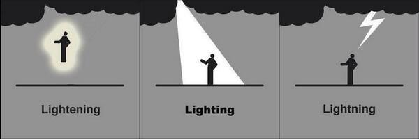

Troubleshooting
These are a few of the things we personally forget to do all the time and cause 90% of our errors. They’re good first checks if R starts throwing errors or behaving strangely.
- Make sure all parentheses are balanced so that every opening
( has a corresponding closing ).
- R doesn’t love
\ backward slashes like Windows, check that they didn’t sneak into your expression somewhere. When in doubt use the / forward slash.
If you think you have completed typing your code, and instead of seeing the > command prompt at the console you see the + character instead. That’s a good sign that either R is still thinking very-very hard, or it is still waiting for you to complete your expression. You can hit Esc or Ctrl-C to force your way back to the console and try typing your code again.
R is very picking about spelling. So are meteorologists when talking about lighting storms.

- In
ggplot we build up plots one piece at a time by adding expressions to one another with the + character. When doing this, make sure the + goes at the end of each line, and not the beginning.
Put the + sign here to make ggplot happy:
ggplot(data = mpg, aes(x = displ, y = hwy)) +
geom_point()
Put it on the next line to make ggplot sad:
ggplot(data = mpg, aes(x = displ, y = hwy))
+ geom_point()
Error messages
Not all error messages are helpful or easy to interpret, but they do seem to be getting better in many R packages. When googling an error message it can help to put the entire message in quotes. For the error below we would search for "Error in fit[5, 100, ] : subscript out of bounds".
{kind=link}